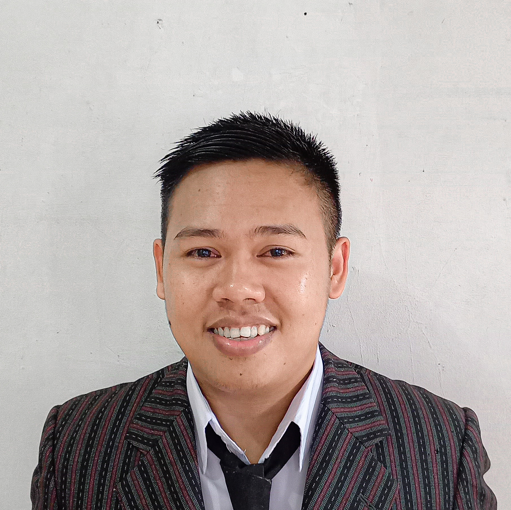

< Summary >
Website sedang dalam perbaikan
I am an Automotive Vocational High School graduate in 2017, Have experience as a Production Operator for 4 years in automotive and food manufacturing. Having skills in the IT field such as diagnosing hardware and software damage on personal computers (PC) and laptops, and having basic web development HTML, CSS, and Javascript